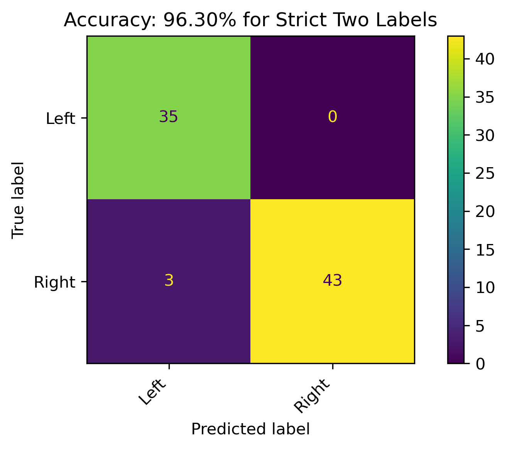
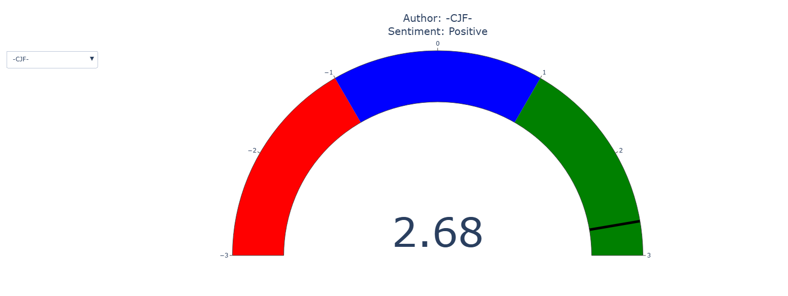

| Positive |
|---|
| Loading ITables v2.3.0 from the internet... (need help?) |
Conclusions
As the cost of college is outpacing inflation and young adults with unproven financial literacy are given loans to cover their educational expenses, a debt crisis is occurring within the United States for those in pursuit of higher education. At any given time, “an average 8.15 percent of student loan debt” across the nation is in default [1]. Many are struggling to keep up with their monthly payments or are facing decades to pay off their debt once interest is accounted for [2]. There is a political divide on whether student loans should be forgiven by the federal government. In fact, one national poll shows 58% of Democrats were in favor of relief, versus just 15% of Republicans [3]. In other words, those with the political bias of Left general support student loan forgiveness while those with the political bias of Right general oppose student loan forgiveness. In support of the idea, many say the burden of debt delays life milestones and brings significant financial struggles. In opposition to the idea, many say it would result in increased federal taxes and doesn’t address the root issue. Those in support argue the system is unjust while those in opposition argue that increased federal taxes are unfair towards those in good standing with their repayments and to those who didn’t pursue higher education. To better investigate the conversations surrounding this controversy, news articles and reddit conversation were gathered with appropriate queries and preapred for analysis.
Online social discourse, such as Reddit conversations, can color outside of the political divide that entities such as politicians or news media organization generally adhere to must strictly abide by. Effectively, this offers a glimpse into the public’s real sentiment towards topics. However, from the perspective of comparing news articles to Reddit conversations, there are limitations stemming from syntactical and structural nuances. News articles mostly use proper and accepted language, structure, and terms, whereas social media and other online community discussion boards, like Reddit, are likely to follow a more unofficial format. Social media may feature slang, text speak, misspellings, and incomplete sentences. Incomplete sentences could be due to single word responses or reactions, or simply due to improperly structured sentences. One result from the analysis illustrated these differences can propagate when comparing news articles and online social discourse. In an attempt to identify political biases within Subreddits, vetted news articles were chosen and combined into a corpus with content aggregated by Subreddits. The chosen news articles were known to cluster together within political biases and apart between political biases. >The theory being that clusters formed from this corpus could help identify political bias of the Subreddits. In essence, Subreddits which clustered with a particular group of news articles could indicate similar bias or sentiment towards the topic.
However, the result ultimately revealed that the Reddit conversations were simply different than the news articles.

Given that sentiment towards this topic is roughly divided along political lines, frequent words from subsets of news median organization with known political bias were examined.
Left Political Bias

Center Political Bias

Right Political Bias

In these images, the higher frequency words are larger. There are shared words between the amalgamations of political biases, however some are more prevalent than others. Articles from news organizations more associated with the Left seem to focus on student loans with an education and temporal component. Articles from the Center associated organizations seem to focus on student loans with heavy reference to borrowers. Articles from the Right associated organizations seem to mention President Biden and President Trump, potentially more focused on their contrasting agendas on student loan forgiveness.
After some of the groundwork was laid by exploratory data analysis, modeling was performed with the intent of predicting political bias for any given news article. The models were used to either predict three biases (Left, Center, or Right) or the two most polar biases (Left or Right).
| Three Labels | Two Labels |
|---|---|
| Left | Left |
| Center | - |
| Right | Right |
Best Model for Three Biases

Best Model for Two Biases

For both the three and two bias class models, there was enough information available to decently teach the models how to partition between the biases, as confirmed by high accuracies. Notably, models across several families of machine learning models perform phenomenally for most divisive binary bias class models.
Additionally, a model known for its ability to produce a tree-like flowchart was implemented during this process. Not only did this model achieve an adequate accuracy of just above 80% on predicting the binary bias class models of Left vs. Right, but it simplified the logic of selection with just a handful of word counts (out of the thousands available across the vocabulary of just these news articles) from any given article.

From top to bottom, the logical flow of splitting by words by their counts in articles can followed, with almost 80% in predicting political bias of a news article. For example, the root node roughly illustrates that if the word “news” appears more or less than 3 times in an article, there is enough information gained to split the article into the next set of leaves. When false (3 or more counts), the bias of Right was given into an almost pure split of 2 Left articles and 64 Right articles. By following the pathways to the final leaves in the tree, this maximizes the information-based potential.
The data for both the news articles and Reddit conversations were also examined regardless of political bias with a technique known as topic modeling. In general, a topic is a mixture of words, and a document is a mixture of topics. In this case, one set of documents is the news articles, and the other set of documents is Reddit authors’ aggregated content. Topic modeling aims to uncover the layered similarities. The specific technique used doesn’t return topics, but topics can be deduced by logically examining the words.
Topic Modeling - News Articles

Topic Modeling - Reddit Conversations

By examining the words and their relative frequency (weight) within the unlabeled topic, a topic can roughly be deduced. There appears to be three main themes within the data collected:
- Finance
- Government
- Education
Given that the overall subject and search queries were for student loan forgiveness, which references the government helping to financially assist students, these were appropriate. Although this isn’t a substantial discovery, it does affirm suitable content was collected.
One of the overarching goals of this research was to investigate if and how sentiment – positive or negative attitude – can be projected onto public discourse. It’s been proven that the political bias of news articles can be effectively modeled. Even though news articles and Reddit conversations have their innate language structure differences, the success of the models on news articles provide another chance of bias discovery on the social discourse platform. These more adept models were applied to the Reddit discussions to potentially uncover patterns in political bias, and ultimately sentiment.
Since sentiment on the topic tends to divide along political lines, analyzing Reddit authors’ political leanings provides a new way to track sentiment. In using the models to classify political bias, positive and negative sentiment scores can be applied to their writing. This offers a structured and quantitative method to examine sentiment towards the topic.
Positive Score

Negative Score
The gauges above illustrate the two most extreme Author scores on either side of the sentiment. The authors with usernames -CJF- and horsebycommittee represent the extremes of Positive and Negative sentiment, respectively.
To examine how this theory truly performed, given the unlabeled experimental nature of the method, a few of the authors’ posts will be illustrated.
Positive Score
Negative Score
| Negative |
|---|
| Loading ITables v2.3.0 from the internet... (need help?) |
The user on the extreme positive side of sentiment is certainly hoping for some sort of relief to pass, as well as exhibiting negative sentiment towards Republicans (or the right). The user on the extreme negative side of sentiment isn’t exactly championing Republicans or the elimination of any plans, but they’re echoing rhetoric of the Right in how the plans were flawed to begin with along with the Right’s outlines on their agenda.
This method is not without its flaws, but it begins to capture deeper complexities within sentiment on such a divisive issue. Although there is the principal component of political division, other auxiliary components such as distrust in leaders and inequity emerge when analyzing social discourse. From Occam’s Razor perspective, perhaps projecting sentiment from political bias on a model efficient for a different type of media is a few steps too far.
The United States is renowned for its educational institutions, but there is a true crisis occurring. Universities can partially implement attractive enhancements due to knowing students will be able to cover increased costs through easily obtainable loans. This has created a feedback loop where tuition has significantly outpaced inflation [4]. Not only is this an issue for millions when the bill comes due, but it is also becoming unappealing to those who don’t wish to be burdened by the debt. Although higher education isn’t the pathway for everyone, should it only become obtainable for the few? Continued dialogue must continue to find sustainable solutions and analyzing how different media outlets along with the sentiment on social discourse platforms can help achieve a shared goal of increased accessibility to higher education.
References
1.
Blake S (2025) Student loans update: Government may garnish millions of borrowers’ wages
2.
Gonzales J (2021) “Like I’m drowning:” Five stories from the student debt crisis - Open Campus — opencampus.org
3.
Stanek B (2024) The pros and cons of student loan forgiveness — theweek.com
4.
Ansari S (2023) The causes and effects of exponentially increasing college tuition rates in the united states